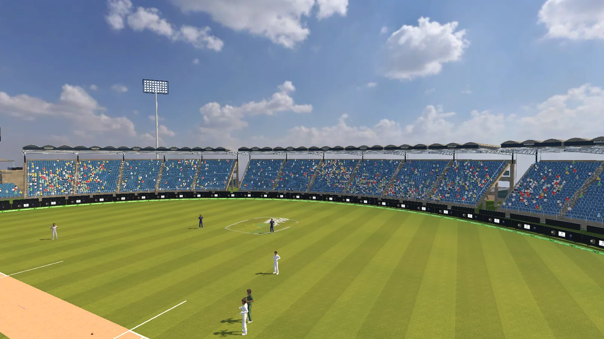
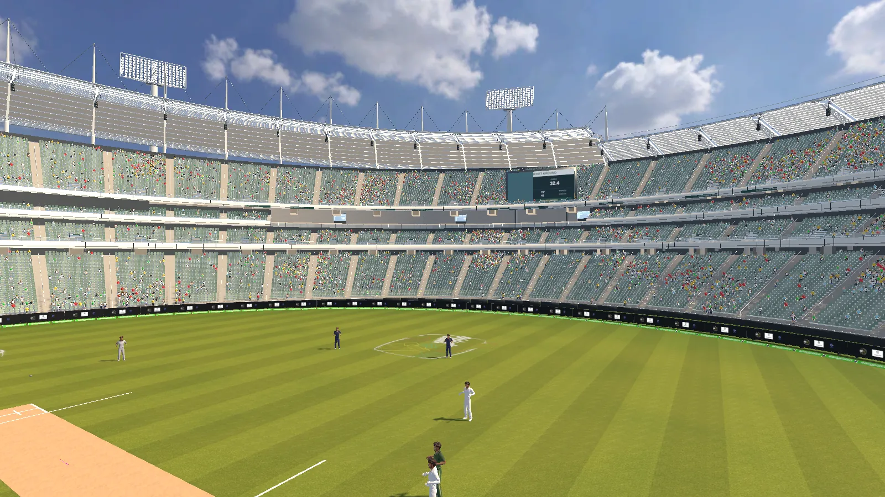

01 / 07
The idea
Cricket Reborn puts a real bat in your hands and a real ball coming at you. A bowling machine in the bay fires the delivery, and on the screen a virtual bowler runs in and releases it at the same instant — so it feels like facing a bowler, not a machine. A camera reads where your shot went, and the game plays out the rest: runs, fielders, commentary and the crowd.
It runs in bays at Just Beat It, a rooftop sports, food and music venue in Karachi, where players book a bay online and play solo, head to head, as teams or in tournaments.

02 / 07
Building the foundation
I joined part-time in January 2026, when the project was a fresh repository, and built much of the original game alongside one other developer:
- Bowlers and the delivery. Bowler setup and animation handling, release points and the ball.
- The field. Fielders, boundaries, umpires and wickets.
- The bowling-machine link. Passing each delivery's ball data from the game to the machine's manager — the connection between the software and the real ball.
- Backend. Firebase sign-in (including guest play) and real-time game data, with match settings and scores for single-player and one-vs-one.
- Presentation. Commentary and sound managers, the stadium and crowd, fireworks and cinematic shots.
03 / 07
Since June: from a game to a venue product
When I came back full-time, the job had changed: the game had to run a real venue, every day, with staff who aren't developers. Most of my work since has been on that.
- Local-first bays. I moved each bay from depending on the cloud to running on the venue's own network. The game PC serves the operator app itself, and the tablet checks the station's health and refuses to start a game until the bay is ready.
- The operator tablet app. Packaged as an Android kiosk app with a staff PIN: players, match setup, team modes, knockout tournaments and live scores — now on version 1.3.1.
- The venue TV. A live score on one 16:9 stage, which works out the big moments of a match on its own from successive score states.
- Match modes and flow. Team innings and alternating multiplayer, catches that can be dropped depending on difficulty, and matches that can be saved and continued after the game closes.

04 / 07
Booking to bay
A bay is only useful if the venue can sell its time. I built the system that takes a booking from Just Beat It's website all the way to the bay:
- Bookings reach the bay. A booking paid on the venue's website arrives on that bay's tablet through the cloud. The game won't start without a started session, and the session ends at the paid time.
- Staff stay in control. Staff can start a booking early, add minutes or end a session, and reception can book walk-ins. Every change is reported back to the venue's ERP, so a bay is never sold twice.
- The operations site. A staff operations website on Vercel with a Turso database, reaching the venue's systems through its Cloudflare-protected gateway.
- The venue's booking site. On justbeatitworld.com itself: PayFast payments, promo codes, multi-hour bookings for padel, futsal and cricket, and contracts for organisations' weekly hours.
05 / 07
Next: Jungle Premier League
A new game for kids I'm building on the same idea and system as Cricket Reborn: a jungle league where animal characters bowl and field. It's in development.
06 / 07
The team
Cricket Reborn is a team project at XRev Studios. The camera system that reads each shot, and a large share of the gameplay work, were built by my teammates — this page covers the parts I built.
07 / 07